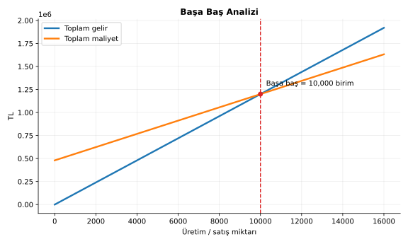
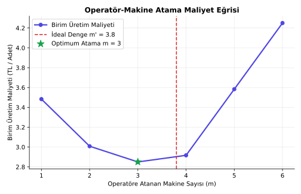
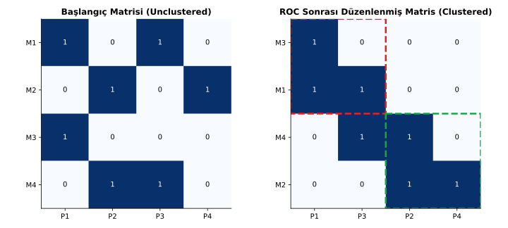
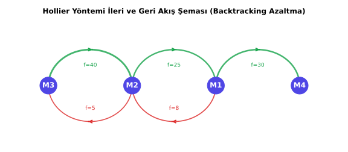
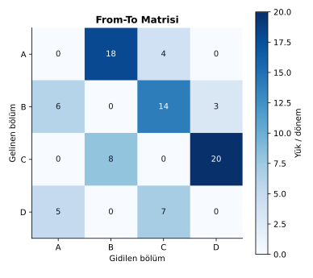
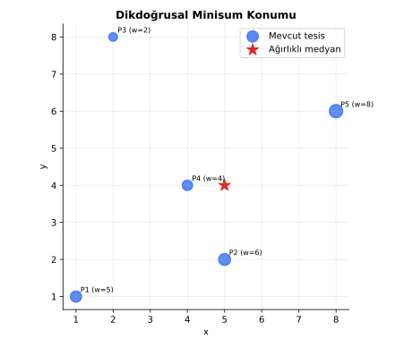
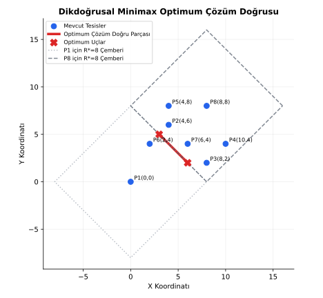
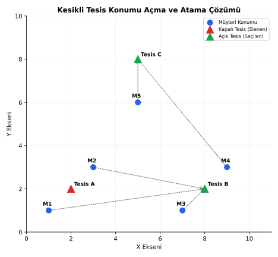

Bütünleme Çalışma Kitabı
Bölüm 1: Giriş ve Kurumsal Tesis Stratejisi
Tesis planlaması, kurumsal bir organizasyonun fiziksel varlıklarının (bina, arazi, makine, iş gücü vb.) hedeflenen amaçları en verimli ve esnek şekilde destekleyecek düzeyde tasarlanması ve yönetilmesi sürecidir. Bu süreç, stratejik düzeyden operasyonel düzeye kadar uzanan hiyerarşik kararları barındırır.
1.1 Karar Düzeyleri (Stratejik, Taktik, Operasyonel)
Tesis tasarlama kararları, işletmenin rekabetçi gücünü belirleyen ve geri dönüşü zor olan kararlar bütünüdür. Karar seviyeleri hiyerarşik olarak üç ana grupta ele alınır:
-
Stratejik Düzey (Uzun Vadeli Kararlar):
- Kapsam: Tesisin kurulup kurulmaması, kurulacaksa hangi ülkede veya coğrafi bölgede konumlanacağı (global tesis yeri seçimi), dikey entegrasyon seviyesi (kendi bünyesinde üretim yapılması veya fason yaptırma stratejisi) ve tesisin genel vizyonunun/misyonunun kurumsal stratejilerle entegrasyonudur.
- Zaman Ufku: Genellikle 5 ila 10 yıl ve üzeridir.
- Özellik: Yüksek sermaye yatırımı gerektirir, geri dönüşü son derece zor ve maliyetlidir.
-
Taktik Düzey (Orta Vadeli Kararlar):
- Kapsam: Kapasitenin belirlenmesi (tesis büyüklüğü), üretim teknolojilerinin ve donanımlarının seçimi, depo/dağıtım merkezlerinin sayısının belirlenmesi, tesisin içindeki departmanların konumlandırılması (blok yerleşim planı - block layout) ve malzeme taşıma sistemlerinin entegrasyonudur.
- Zaman Ufku: 1 ila 5 yıl arasındadır.
- Özellik: Stratejik kararların çizdiği sınırları takip eder ve kaynak planlamasına odaklanır.
-
Operasyonel Düzey (Kısa Vadeli Kararlar):
- Kapsam: Detay yerleşim düzeni (detailed layout - tezgahların, masaların ve ara stok alanlarının santim santim yerleşimi), günlük ve haftalık iş çizelgeleme, operatör-makine atamaları, iş istasyonu dengeleme, anlık envanter yönetimi ve günlük malzeme taşıma operasyonlarının yürütülmesidir.
- Zaman Ufku: Günlük, haftalık veya aylık periyotlardır.
- Özellik: Esnekliği en yüksek olan, operasyonel verimliliği maksimize etmeyi amaçlayan kararlardır.
1.2 Ürün Tasarım Değişikliklerinin Tesis Yerleşimine Etkileri
Bir tesisin yerleşim düzeni, doğrudan üretilecek ürünün fiziksel özelliklerine (boyut, ağırlık, malzeme vb.) ve üretim hacmine dayanır. Ürün tasarımında yapılacak bir değişiklik, tesis yerleşiminde köklü revizyonlara neden olabilir:
- Boyut ve Ağırlık Değişimi: Ürünün daha ağır veya büyük tasarlanması, kullanılan konveyör veya forklift gibi taşıma sistemlerinin kapasitelerini aşabilir. Bu durum, koridor genişliklerinin artırılmasını ve daha güçlü zemin mukavemeti gerektiren özel alanların kurulmasını zorunlu kılar.
- Parça ve Malzeme Çeşitliliği: Ürüne yeni bileşenler eklenmesi, montaj hattında yeni iş istasyonlarının açılmasını gerektirir. Malzeme türünün değişmesi (örn. ahşaptan metale geçiş) tamamen yeni üretim süreçlerinin (örn. kaynak, döküm, sac büküm) tesise eklenmesine ve dolayısıyla yerleşim tipinin ürün esaslı yerleşimden süreç esaslı yerleşime kaymasına neden olabilir.
- Tasarım Aşaması ve Maliyet İlişkisi: İmalat maliyetlerinin %70-80’i tasarım aşamasında kilitlenir. Eş zamanlı mühendislik (concurrent engineering) uygulanmayan, ardışık tasarım süreçlerinde son anda yapılan tasarım değişiklikleri süreç maliyetlerini katlanarak artırır.
1.3 Müfredat Bağlamı ve Süreç Akışı
Tesis planlama ve tasarımı, ardışık kararlar zinciridir. Bir önceki aşamanın çıktısı, bir sonraki aşamanın girdisini oluşturur:
flowchart LR S[Kurumsal strateji] --> U[Ürün / hizmet] U --> P[Süreç seçimi] P --> C[Çizelge ve kapasite] C --> A[Akış ve alan] A --> Y[Yerleşim] Y --> K[Konum ve tesis sistemi] K --> D[Devreye alma] D --> I[Sürekli iyileştirme]
Bölüm 2: Kapasite, Fire ve Kaynak Planlama
Kapasite planlaması, bir tesisin belirli bir zaman diliminde üretebileceği, depolayabileceği veya işleyebileceği maksimum çıktı miktarını belirleme sürecidir. Bu süreçte maliyet yapıları, fire oranları ve operatör verimlilikleri matematiksel olarak modellenmelidir.
2.1 Kapasite ve Başa Baş Analizi
İşletmelerde maliyetler üç ana grupta incelenir:
- Sabit Maliyetler (): Üretim hacminden bağımsız olarak ödenen (kira, sigorta, amortisman, bazı sabit telif ve dizgi giderleri vb.) maliyetlerdir.
- Değişken Maliyetler (): Üretim miktarıyla doğrudan (doğrusal) değişen (ham madde, işçilik, enerji, iskontolar vb.) maliyetlerdir.
- Yarı Değişken Maliyetler: Belirli bir üretim hacmine kadar sabit kalan, ardından üretimle birlikte artan maliyetlerdir (örn. bakım giderleri).
Başa Baş Noktası (BBN) Formülleri
Tek ürün durumunda miktar cinsinden başa baş noktası ():
Burada birim satış fiyatı, birim değişken maliyet, ise birim katkı payıdır. Satış tutarı (para birimi) cinsinden başa baş noktası ():
Çok Ürünlü Durum ve Ağırlıklı Katkı Payı Oranı ()
Çok ürün üreten işletmelerde, her ürünün toplam satış geliri içindeki ağırlığı () ve katkı payı oranı () kullanılarak ağırlıklı katkı payı oranı () hesaplanır:
Para birimi cinsinden çok ürünlü başa baş noktası ():
Çok Ürünlü Başa Baş Çözümlü Örnek Walkthrough
Aylık sabit maliyeti USD (yıllık USD) olan ve yılda gün çalışan bir restoran için veri seti şu şekildedir:
- Sandviç: Yıllık Talep = 9.000 adet, Fiyat = 5,00 USD, Değişken Maliyet = 3,00 USD.
- İçecek: Yıllık Talep = 9.000 adet, Fiyat = 1,50 USD, Değişken Maliyet = 0,50 USD.
- Fırın Patates: Yıllık Talep = 7.000 adet, Fiyat = 2,00 USD, Değişken Maliyet = 1,00 USD.
Adım 1: Her Ürünün Yıllık Satış Tutarı () ve Satış Payı Ağırlığı ()
- USD
- USD
- USD
- USD
Adım 2: Katkı Payı Oranları ()
Adım 3: Ağırlıklı Katkı Payı Oranı ()
- Restoran sunumundaki gibi ara basamak yuvarlamaları kullanılarak ():
- Başa Baş Yıllık Satış Tutarı:
- Başa Baş Günlük Satış Tutarı:
(Not: Ara basamak yuvarlaması yapılmadan tam hassasiyetle hesaplandığında , USD ve USD çıkacaktır.)

2.2 Dinamik Kapasite Büyümesi
Kapasite artış kararları talep büyümesiyle birlikte ele alınmalıdır. Yatırım ve işletim maliyetlerinde ölçek ekonomisi bulunurken, paranın sürekli bir iskonto oranıyla zaman değeri de hesaba katılmalıdır.
Sonsuz Yatırım Serisinin Şimdiki Değeri
Talebin doğrusal artış hızı (kapasite/yıl) ve iki yatırım arası süre (yıl) olsun. Her yılında bir yapılması gereken kapasite ilavesi olacaktır. büyüklüğünde bir tesis kurmanın maliyeti ( ölçek ekonomisi faktörü) ise, anlarında yapılan yatırımların sürekli iskonto oranı altındaki bugünkü değerler toplamı :
Optimal Zaman Aralığı ve Dönüşümü Derivasyonu
fonksiyonunu minimize etmek için ‘e göre türevini alıp sıfıra eşitleriz:
Payı sıfıra eşitlediğimizde:
Her iki tarafı ile bölersek:
boyutsuz değişken dönüşümü yaparsak optimal denge koşulu elde edilir:
Çözümlü Örnek Walkthrough (Ders Çalışma Sorusu-2)
- Verilenler: milyon TL (, ), ton/yıl, .
- Adım 1: denklemini çözeriz. Sayısal çözümle (veya tablodan) bulunur.
- Adım 2 (Optimal Zaman Aralığı):
- Adım 3 (Optimal İlave Kapasite Büyüklüğü):
- Adım 4 (Her İlavenin Nominal Maliyeti):
- Adım 5 (İlk 4 Yatırımın Şimdiki Değeri - ):
2.3 Düşük Hacimde Olasılıklı/Rassal Iskarta Payı (Binom Dağılımı)
Yüksek hacimli seri üretimde ortalama fire oranlarını kullanmak uygunken, düşük hacimli siparişe dayalı özel üretimlerde rassal ıskartaların varlığı, beklenen kârı maksimize edecek optimal parti büyüklüğünü () hesaplamak için Binom olasılık modelini gerektirir.
Matematiksel Model ve Kâr Eşitliği
Siparişi tamamlamak için en az adet hatasız/sağlam parçaya ihtiyaç duyulmaktadır. Eğer üretilen adet parçadan sağlam çıkanların sayısı ise müşteri siparişi kabul eder ve toplam gelir () elde edilir. Aksi halde () sipariş teslim edilemez ve gelir elde edilemez. Bir parçanın sağlam çıkma olasılığı ise sağlam parça sayısı dağılımına uyar. Beklenen kâr formülü:
Adım Adım Slayt Örneği Çözümü
- Verilenler: Müşteri siparişi için tam sağlam parça gerek. Başarı olasılığı . Kabul edilirse toplam gelir TL. Bir adet dökümün birim maliyeti TL.
- Adaylar: için hesaplama:
-
için:
-
için:
-
için:
-
için:
Karar Analizi ve Risk Değerlendirmesi
En yüksek beklenen kârı ( TL) veren optimal ekonomik üretim miktarıdır.
- Sezgisel Tuzak: Sadece ortalama fire oranı göz önüne alınsaydı, adet üretilirdi. Ancak matematiksel modelleme, bu kararın arkasındaki risk ve maliyet dengesini (eksik üretip siparişi kaybetme riski ile fazla üretip ekstra birim maliyete katlanma riski arasındaki takası) tam olarak ortaya koyar.
- Zarar Olasılığı Hesabı: seçildiğinde zarar etme durumu, sağlam parça sayısının olması ve siparişin reddedilmesidir.
2.4 Aşamalı Fire ve Donanım Gereksinimi
Seri bağlı süreçlerde fire oluşumu, donanım kapasitesi ve operatör gereksinimlerinin planlanmasını doğrudan etkiler.
Sürekli (Continuous) ve Aşamalı (Stage-wise) Yuvarlama Farkı
- Sürekli Yaklaşım (Continuous): Sürecin başından sonuna kadar fire oranları kesirli olarak taşınır ve toplam girdi tek bir formülle hesaplanarak en son aşamada yukarı yuvarlanır:
- Aşamalı Yaklaşım (Stage-wise): Her bir ara operasyonda yarım/kesirli parça imal edilemeyeceğinden, her bir aşamanın girdi ihtiyacı ayrı ayrı yukarı yuvarlanarak geriye doğru yürütülür:
Çözümlü Örnek Walkthrough (Geriye Yürütme)
Nihai çıktı hedefi adet olan 3 aşamalı bir süreçte fire oranları sırasıyla , , ‘tir.
- Sürekli Plan:
- Aşamalı Plan:
- 3. Aşama Girdisi: adet.
- 2. Aşama Girdisi: adet.
- 1. Aşama Girdisi: adet.
Analiz: Aşamalı yuvarlama, her istasyonda tam sayı kısıtını korumak için ilk aşamada birim planlamayı gerektirirken; sürekli yuvarlama birim verir. Aradaki 1 birimlik fark, ara istasyonlardaki tamsayılık gereksiniminin kümülatif etkisinden kaynaklanır.
Operatör-Makine Atama Modelleri
Operatör ve makinelerin birlikte çalıştığı yarı otomatik ortamlarda aşağıdaki değişkenler tanımlanır:
- : Eşzamanlı işler (yükleme, boşaltma süresi - hem operatör hem makine meşgul).
- : Bağımsız operatör işleri (yürüme, kontrol etme, paketleme süresi - yalnız operatör meşgul).
- : Bağımsız makine işleme süresi (otomatik çevrim süresi - yalnız makine meşgul).
- : Bir operatöre atanan makine sayısı (tamsayı karar değişkeni).
- İdeal Makine Sayısı ():
- Gerçek Çevrim Süresi ():
- Sistem Üretim Hızı ():
- Birim Üretim Maliyeti (): Burada operatörün birim zaman maliyeti, ise makinenin birim zaman maliyetidir.

Bölüm 3: Akış, Hücre ve Faaliyet İlişkileri
Tesis içi bölümlerin, makinelerin ve iş istasyonlarının birbirleriyle olan ilişkileri, malzeme ve insan akışlarının yoğunluğu ile faaliyetlerin nitel yakınlık derecelerine göre belirlenir. Bu bölümde, hücre oluşturmada kullanılan doğrudan kümeleme ve ikili sıralama (ROC) algoritmaları, makine sıralamada kullanılan Hollier yöntemi, malzeme akış şiddetini ölçen MAG analizi ve alan planlama yaklaşımları matematiksel ve pedagojik olarak ele alınmaktadır.
3.1 DCA ve ROC (Rank Order Clustering) Algoritmaları
Grup Teknolojisi (Group Technology) ve Hücresel İmalat (Cellular Manufacturing) düzeninde temel amaç, benzer imalat süreçlerine sahip parçaları ürün aileleri (part families) halinde, bu parçaları işleyen makineleri ise imalat hücreleri (manufacturing cells) olarak gruplandırmaktır. Bu gruplandırma, makine-parça matrisinin ve ‘lardan oluşan yapısını köşegen boyunca bloklaştırmak suretiyle gerçekleştirilir.
Doğrudan Kümeleme Algoritması (DCA)
DCA, makine-parça matrisindeki satır ve sütunların toplam sayılarına göre ön sıralanması ve ardından ‘leri sola ve yukarıya doğru öteleyerek hücreleri görünür kılan sezgisel bir yaklaşımdır.
İkili Sıralama Algoritması (Rank Order Clustering - ROC)
ROC, her satır ve sütunu ikili sayı sistemindeki (binary) basamaklar olarak ele alıp ondalık (decimal) karşılıklarına göre ağırlıklandırarak sıralayan sistematik bir algoritmadır.
sütunlu (parçalı) bir matriste . satırın (makinenin) skoru :
satırlı (makineli) bir matriste . sütunun (parçanın) skoru :
Burada değeri, makinesinin parçasını işlemesi durumunda , aksi halde değerini alır.
Algoritmanın Adımları
- Her satır (makine) için soldan sağa doğru ikili ağırlıklar () atanarak ondalık satır skorları hesaplanır.
- Satırlar, ondalık skorlarına göre azalan sırada yeniden dizilir.
- Yeniden dizilmiş matriste her sütun (parça) için yukarıdan aşağıya doğru ikili ağırlıklar () atanarak ondalık sütun skorları hesaplanır.
- Sütunlar, ondalık skorlarına göre azalan sırada yeniden dizilir.
- Herhangi bir adımda matris yapısı değişmeyene kadar (yakınsama sağlanana kadar) 1-4 adımları tekrarlanır.
Çözümlü Örnek Walkthrough (DCA ve ROC)
Başlangıç parça-makine ilişkileri (5 makine, 6 parça):
- P1: M1, M3
- P2: M1
- P3: M2, M4, M5
- P4: M1, M3
- P5: M2
- P6: M4, M5
Adım 1: Başlangıç Matrisi ve Satır Skorlarının Hesaplanması Sütun (parça) sayısı olduğundan ikili ağırlıklar soldan sağa , , , , , ‘dir.
| Makineler | P1 | P2 | P3 | P4 | P5 | P6 | Hesaplama | Satır Skoru |
|---|---|---|---|---|---|---|---|---|
| M1 | 1 | 1 | 0 | 1 | 0 | 0 | 52 | |
| M2 | 0 | 0 | 1 | 0 | 1 | 0 | 10 | |
| M3 | 1 | 0 | 0 | 1 | 0 | 0 | 36 | |
| M4 | 0 | 0 | 1 | 0 | 0 | 1 | 9 | |
| M5 | 0 | 0 | 1 | 0 | 0 | 1 | 9 |
Adım 2: Satırların Azalan Skora Göre Sıralanması Makinelerin yeni sırası: M1 (52), M3 (36), M2 (10), M4 (9), M5 (9).
| Sıralı Mak. | P1 | P2 | P3 | P4 | P5 | P6 |
|---|---|---|---|---|---|---|
| M1 | 1 | 1 | 0 | 1 | 0 | 0 |
| M3 | 1 | 0 | 0 | 1 | 0 | 0 |
| M2 | 0 | 0 | 1 | 0 | 1 | 0 |
| M4 | 0 | 0 | 1 | 0 | 0 | 1 |
| M5 | 0 | 0 | 1 | 0 | 0 | 1 |
Adım 3: Sütun Skorlarının Hesaplanması Satır (makine) sayısı olduğundan ikili ağırlıklar yukarıdan aşağıya , , , , ‘dir.
- P1 Skoru:
- P2 Skoru:
- P3 Skoru:
- P4 Skoru:
- P5 Skoru:
- P6 Skoru:
Adım 4: Sütunların Azalan Skora Göre Sıralanması Eşit skorlarda başlangıç sırası korunur. Yeni parça sırası: P1 (24), P4 (24), P2 (16), P3 (7), P5 (4), P6 (3).
| Sıralı Mak. \ Parça | P1 | P4 | P2 | P3 | P5 | P6 |
|---|---|---|---|---|---|---|
| M1 | 1 | 1 | 1 | 0 | 0 | 0 |
| M3 | 1 | 1 | 0 | 0 | 0 | 0 |
| M2 | 0 | 0 | 0 | 1 | 1 | 0 |
| M4 | 0 | 0 | 0 | 1 | 0 | 1 |
| M5 | 0 | 0 | 0 | 1 | 0 | 1 |
Adım 5: Yakınsama Kontrolü Yeniden satır skorları hesaplanırsa: M1=56, M3=48, M2=6, M4=5, M5=5. Sıralama değişmemiştir. Sütun skorları hesaplanırsa: P1=24, P4=24, P2=16, P3=7, P5=4, P6=3. Sıralama yine sabittir. Algoritma yakınsamıştır ve durulur.
Matris incelendiğinde net iki hücre bloğu oluşmuştur:
- Hücre 1: Makineler {M1, M3} ve Parçalar {P1, P2, P4}
- Hücre 2: Makineler {M2, M4, M5} ve Parçalar {P3, P5, P6}
Darboğaz Makineler (Bottleneck Machines)
Eğer bir makine birden fazla hücredeki parçaların imalatı için ortak kullanılmak zorundaysa köşegende tam bir blok ayrımı yapılamaz. Bu durumda ortaya çıkan ortak makineler darboğaz yaratır. Çözüm olarak:
- Darboğaz makinenin hücre sınırına yerleştirilmesi,
- Ortak kullanılan makineden tesise bir adet daha alınarak hücreler bazında kopyalanması (çoğaltma),
- Parçaların imalat süreçlerinin veya tasarımlarının değiştirilerek o makineye olan ihtiyacın elimine edilmesi,
- İlgili işlemler için fason imalat (outsource) yoluna gidilmesi seçenekleri değerlendirilir.

3.2 Hollier Yöntemi (Sıralama Oranı)
İmalat hücreleri belirlendikten sonra, hücre içi malzeme akış yolunu en kısa kılmak amacıyla makinelerin mantıksal sıralamasının (flow sequencing) yapılması gerekir. Hollier Yöntemi, makineler arası taşıma sıklıklarını temel alan bir sezgisel algoritmadır.
Matematiksel Gösterim ve Değişkenler
Hücredeki her bir makinesi için:
- Giden Toplam Akış ( - Outgoing Flow): makinesinden diğer makinelere doğru giden toplam parça hareket sayısı.
- Gelen Toplam Akış ( - Incoming Flow): Diğer makinelerden makinesine doğru gelen toplam parça hareket sayısı.
- Rasyonel Sıralama Oranı (): Giden akışın gelen akışa oranı.
Burada , ‘den ‘ye olan akış miktarını göstermektedir. Matris asimetriktir.
Algoritma Kuralları
- Oranı en yüksek olan makine, iş akışının en başına (girişe) yerleştirilir (çünkü çok iş dağıtır, az iş alır).
- Oranı en düşük olan makine, iş akışının en sonuna (çıkışa) konumlandırılır.
- Eğer bir makinenin ise oranı kabul edilir ve bu makine kesinlikle en başa gelir.
- Eşit oran () durumunda, gelen akış () değeri daha büyük olan makine, küçük olanın önüne konumlandırılır.
Çözümlü Örnek Walkthrough
4 makineli bir hücrede 50 parçanın akış verileriyle oluşturulmuş From-To (Geliş-Gidiş) matrisi şu şekildedir:
| From \ To | M1 | M2 | M3 | M4 |
|---|---|---|---|---|
| M1 | 0 | 5 | 0 | 25 |
| M2 | 30 | 0 | 0 | 15 |
| M3 | 10 | 40 | 0 | 0 |
| M4 | 10 | 0 | 0 | 0 |
Adım 1: Satır ve Sütun Toplamlarının (Giden/Gelen) Hesaplanması
- M1: ,
- M2: ,
- M3: ,
- M4: ,
Adım 2: Sıralama Oranlarının Bulunması ve Sıralama
Oranlar büyükten küçüğe sıralandığında: . Optimal makine yerleşim sırası: M3 → M2 → M1 → M4 olarak elde edilir.
Adım 3: Hücre İçi Akış Performans Analizi Sıralama elde edildikten sonra (M3 → M2 → M1 → M4), akışlar üç kategoride analiz edilir:
- İleri Sıralı Akış (Forward Sequential Flow): Sıralamada hemen sağdaki makineye geçişler (, , ).
- Toplam İleri Sıralı = parça.
- Atlamalı İleri Akış (Forward Skipping Flow): Sıralamada sağa doğru fakat araya en az bir makine girerek yapılan geçişler (, ).
- Toplam Atlamalı = parça.
- Geriye Akış (Backtracking Flow): Sıralamada sola doğru yapılan geçişler (, ).
- Toplam Geriye Dönüş = parça.
Toplam Akış Hareket Sayısı: parça.
Yüzdesel Değerlendirme:
- İleri Sıralı Akış Yüzdesi = (Slayt: )
- Atlamalı İleri Akış Yüzdesi = (Slayt: )
- Geriye Akış Yüzdesi = (Slayt: )
Tasarım Yorumu
Hücresel yerleşimlerde her zaman yüksek ileri yönlü akış yüzdesi istenir. Geriye akışlar (backtracking), malzeme taşıma sistemlerinde zıt yönlü tıkanmalara, daha karmaşık konveyör tasarımlarına ve ek ara stoklama ihtiyaçlarına neden olacağı için minimize edilmelidir.

3.3 MAG Akış Şiddeti ve From-To Matrisi
Tesis planlamasında, farklı fiziksel özelliklere (boyut, ağırlık, durum) sahip ürünlerin akış yoğunluğunu ortak bir paydada birleştirmek için MAG (Material Flow Intensity / Malzeme Akış Şiddeti) taşınabilirlik ölçütü kullanılır.
MAG Akış Şiddeti Formülü
Bir parçanın birim taşıma zorluğunu gösteren MAG değeri ():
Burada:
- (Temel Hacim Katsayısı): Parçanın fiziksel hacmine göre interpolasyonla belirlenen katsayı.
- (Yoğunluk / Ağırlık Katsayısı): Parçanın birim ağırlığına göre düzeltme katsayısı.
- (Biçim Katsayısı): Düzgünlük, yuvarlaklık gibi geometrik yapı katsayısı.
- (Zarar Riski Katsayısı): Hassaslık ve kırılganlık düzeltmesi.
- (Durum / Taşıma Güçlüğü Katsayısı): Yağlılık, sıcaklık, tutuş zorluğu vb. zorlaştırıcı etkenler.
Hacim ara değerleri için katsayısı doğrusal interpolasyonla bulunur:
Dönemsel (örneğin yıllık veya haftalık) hareket akış şiddeti (): Burada dönemsel üretim miktarı, ise ilgili rota geçişinin parça başına tekrarlanma sayısıdır.
Tam Çözümlü MAG Örneği
Taban çapı 6 cm (), yüksekliği 17 cm olan silindirik bir kalıp merkezleme mili. Ağırdır ve yoğundur (). Uzundur, yuvarlatılmış ve düzensizdir (). Kolaylıkla zarar görmez (). Yağlıdır ve elle taşıması zordur (). Yılda 50.000 adet üretilmektedir. ( alınacaktır).
Adım 1: Hacim () Hesabı
Adım 2: Hacim Katsayısı () İnterpolasyonu MAG referans tablosunda ve olarak verilmiştir. 459 değeri bu iki aralıktadır:
Adım 3: Parça Başına MAG Değerinin Hesabı
Adım 4: Yıllık Akış Şiddeti () Hesabı
NOTE
Yuvarlama Ayrımı: Slayt örneğinde ve alınmış olup yıllık akış MAG/yıl olarak hesaplanmıştır. Matematiksel olarak tam interpolasyonla hassas sonuç MAG/yıl’dır. Sınavda bu yuvarlama kabulleri belirtilmelidir.
Ürün Rotalarından Yönlü From-To Matrisi Kurulması
MAG gibi ortak akış birimleri veya doğrudan taşıma miktarları kullanılarak, ürünlerin üretim rotaları üzerinden yönlü bir From-To matrisi oluşturulur. Sadece ardışık geçişler (rota üzerindeki peş peşe gelen departman çiftleri) matrise eklenir.
Örnek Rotalar ve Akış Verileri:
- P1: Günlük Miktar = 30, Rota = A-C-B-D-E, Eşdeğer Taşıma Faktörü = 1
- P2: Günlük Miktar = 12, Rota = A-B-D-E, Eşdeğer Taşıma Faktörü = 1
- P3: Günlük Miktar = 7, Rota = A-C-D-B-E, Eşdeğer Taşıma Faktörü = 2 (boyutu 2 kat büyük, eşdeğer akış = )
Adım Adım Geçişlerin Belirlenmesi:
- A → B: P2 = 12
- A → C: P1 + P3 =
- B → D: P1 + P2 =
- B → E: P3 = 14 (Not: Bu akış slayt 84’teki tablolarda gözden kaçırılarak 0 yazılmıştır. Doğru analizde yer almalıdır.)
- C → B: P1 = 30
- C → D: P3 = 14
- D → B: P3 = 14
- D → E: P1 + P2 =
Yönlü Akış Matrisi:
| From \ To | A | B | C | D | E |
|---|---|---|---|---|---|
| A | - | 12 | 44 | 0 | 0 |
| B | 0 | - | 0 | 42 | 14 |
| C | 0 | 30 | - | 14 | 0 |
| D | 0 | 14 | 0 | - | 42 |
| E | 0 | 0 | 0 | 0 | - |
Toplam Akış Matrisi (Yönsüz / Simetrikleştirilmiş): Departmanlar arası yön gözetmeksizin toplam akışları () bulmak için üst üçgen veya birleşik matris kurulur. Örneğin B ile D arasındaki toplam akış: olur.
- B-D: 56
- A-C: 44
- D-E: 42
- B-C: 30
- C-D: 14
- A-B: 12
- B-E: 14

3.4 Faaliyet İlişki Diyagramı (REL Chart) ve Alan Hesabı
Tesis planlamasında nicel akış verilerinin (malzeme akışı) yanında, bilgi akışı, ortak ekipman kullanımı ve kirlilik/gürültü gibi nitel etkenler de yerleşim tasarımını şekillendirir. Bu nitel yakınlık gereksinimleri REL Chart (Relationship Chart / Faaliyet İlişki Şeması) kullanılarak modellenir.
Yakınlık Dereceleri (Closeness Ratings) ve Sayısal Skorları
Muther (1973) tarafından önerilen yakınlık ilişkisi kodları, sayısal puanları ve genel frekans dağılımları şu şekildedir:
| Kod | İlişkinin Önemi | Puanı | Kabul Edilen Dağılım (%) | Standart Gerekçe Kodları |
|---|---|---|---|---|
| A | Kesinlikle Gerekli (Absolutely Necessary) | 4 | %5 | 01: Ortak Ekipman Kullanımı |
| E | Özellikle Önemli (Especially Important) | 3 | %10 | 02: Malzeme Hareketi |
| I | Önemli (Important) | 2 | %15 | 03: Personel Hareketi |
| O | Sıradan Yakınlık (Ordinary Closeness) | 1 | %20 | 04: Denetim / Gözetim |
| U | Önemsiz (Unimportant) | 0 | %50 | 05: Ortak Evrak / Bilgi Akışı |
| X | Arzu Edilmez (Undesirable) | -1 | - | 06: Gürültü, Toz, Yangın Riski |
| XX | Kesinlikle İstenmez (Extremely Undesirable) | -2 ila -4 | - | 07: İletişim Sıklığı |
Alan Hesabı ve Alan Katsayısı Yöntemi
Tesis alan planlamasında, her bir donanım türü için net taban alanı (), makine sayısı () ve bakım/operasyonel çalışma boşluklarını içeren alan katsayısı () kullanılarak net İşletme Donanım Alanı () hesaplanır:
İşletme donanım alanına ek olarak, tesis genelinde paylaşılan veya destekleyici nitelikteki diğer alan gereksinimleri (ara depolar, kalite kontrol, serbest alan ve ulaşım yolları) belirli katsayılarla üzerinden sisteme dahil edilir:
- Ara Depo Alanı ():
- Kalite Kontrol Alanı ():
- Serbest Alan ():
- Ulaşım Yolları ():
Tüm bu destek kalemlerinin dahil edildiği toplam alan gereksinimi ():
Çözümlü Alan Katsayısı Örneği: Bir tesiste 20 adet 10 m² (katsayısı 3,11), 15 adet 13 m² (katsayısı 3,00) ve 5 adet 7 m² (katsayısı 3,42) tezgah bulunmaktadır.
Kritik Akademik ve Sınav Uyarıları
- Sınıf Sınırlarındaki Çakışmalar: Slayt 84-85’te akış miktarlarını yakınlık ilişkilerine çevirirken sınıf aralıkları
0-11(U) ve11-22(O) gibi çakışan sınırlar içermektedir. Bu tür çakışmaları önlemek için aralıkların ayrık tanımlanması gerekir (örn.0-11U,12-22O). - Akışsız Çiftlerin Doğrudan X Yapılması Hatası: Slaytlarda akışsız departman çiftleri doğrudan
X(Arzu Edilmez) ilişkisi ile kodlanmıştır. Oysa akışın sıfır olması tek başına olumsuz bir yakınlık gerekçesi değildir; bu durum sadeceU(Önemsiz) ilişkisini gösterir.Xkodunun verilmesi için gürültü, toz, kimyasal tehlike gibi olumsuz bir gerekçe (örneğin 06 gerekçe kodu) bulunmalıdır. Sınavda bu ayrım net şekilde yazılmalıdır.

Bölüm 4: Yerleşim Tasarımı ve İyileştirme Algoritmaları
Tesis içi yerleşim tasarımı, departmanların fiziksel sınırlarını ve konumlarını belirleyen süreçtir. Yerleşim problemleri çoğunlukla NP-hard sınıfında yer aldığından, çözüm için matematiksel modellerin yanı sıra bilgisayarlı sezgisel ve meta-sezgisel algoritmalar kullanılmaktadır. Bu algoritmalar temel olarak “Kurucu (Construction)” ve “Geliştirici (Improvement)” olmak üzere iki gruba ayrılır.
4.1 Süreç Yerleşim Taşıma Maliyeti ve SLP
Sürece göre yerleşim tasarımlarında temel amaç, departmanlar arasındaki malzeme taşıma maliyetini en aza indirmektir.
Toplam Taşıma Maliyeti Amaç Fonksiyonu
Bir tesis yerleşiminin toplam malzeme taşıma maliyeti aşağıdaki formülle hesaplanır:
Burada:
- : Tesisteki toplam departman veya iş merkezi sayısı.
- : Departman indisleri.
- : departmanından departmanına birim dönemdeki malzeme akış miktarı (yük/hafta, gezi/gün vb.).
- : departmanının atandığı konumu ile departmanının atandığı konumu arasındaki mesafe (genellikle dik doğrusal - rectilinear mesafe kullanılır).
- : departmanından departmanına birim yükü birim mesafe taşımanın maliyeti (genellikle kabul edilir).
Değerlendirme Skorları
- Komşuluk Esaslı Puan (Adjacency Score): Nitel ilişki matrislerine (REL Chart) dayanır. Birbirine sınırdaş (komşu) olan departmanların yakınlık derecesi katsayılarının (A, E, I, O vb.) sayısal değerlerinin toplamıdır. Bu skorun maksimize edilmesi hedeflenir.
- Uzaklık Esaslı Puan (Distance Score): Nicel akış matrislerine dayanır. Departmanların ağırlık merkezleri arasındaki mesafe ile akış şiddetlerinin çarpımlarının toplamıdır (yukarıdaki maliyet fonksiyonu). Bu skorun minimize edilmesi hedeflenir.
Sistematik Yerleşim Planlama (SLP - Systematic Layout Planning)
Richard Muther tarafından geliştirilen SLP, nitel ve nicel ilişkileri entegre eden 10 adımlı, disiplinli bir planlama prosedürüdür:
- Girdi Verileri ve Faaliyetlerin Belirlenmesi: P (Ürün), Q (Miktar), R (Rota), S (Destek Servisleri) ve T (Zaman) verilerinin toplanması.
- Malzeme Akış Analizi (Flow of Materials): Ürün rotaları üzerinden From-To matrislerinin oluşturulması.
- Faaliyet İlişkileri Analizi (Activity Relationships): Nitel REL şemasının çıkarılması.
- İlişki Diyagramı (Relationship Diagram): Departmanlar arasındaki yakınlık bağlarının çizgisel olarak görselleştirilmesi.
- Alan Gereksinimleri (Space Requirements): Makine boyutları ve operasyonel boşluklara göre alan ihtiyaçlarının hesabı.
- Varolan Alan (Space Available): Tesis binasının fiziksel sınırlarının ve kullanılabilir alanının belirlenmesi.
- Alan İlişki Diyagramı (Space Relationship Diagram): İlişki diyagramındaki bloklara gerçek alan boyutlarının giydirilmesi.
- Düzenleyici Hususların Değerlendirilmesi (Modifying Considerations): Malzeme taşıma sistemleri, depolama pratikleri ve güvenlik gibi faktörlerin entegrasyonu.
- Pratik Kısıtlar (Practical Limitations): Bütçe, yasal mevzuatlar ve kolon yerleşimleri gibi kısıtların yansıtılması.
- Alternatiflerin Değerlendirilmesi ve Seçim (Evaluation & Selection): Geliştirilen alternatif yerleşim planlarının puanlama veya maliyet analiziyle karşılaştırılarak nihai planın seçilmesi.
4.2 İkili Yer Değiştirme Yöntemi ve CRAFT Algoritması
CRAFT (Computerized Relative Allocation of Facilities Technique), mevcut bir başlangıç yerleşim planını geliştirmek için kullanılan hücresel tabanlı bir iyileştirme (improvement) algoritmasıdır.
Departman Değişim (Swap) Kuralları
CRAFT, iki departmanın yerini değiştirebilmek için şu kurallardan en az birinin sağlanmasını şart koşar:
- Eşit Alana Sahip Olma: İki departmanın alan büyüklükleri aynı ise, tesisin diğer departmanlarının geometrik yapısını bozmadan doğrudan yer değiştirebilirler.
- Ortak Sınıra (Border) Sahip Olma: Departmanların alanları farklı olsa bile ortak bir sınır paylaşıyorlarsa (komşu iseler), sınır çizgileri kaydırılarak yer değiştirmeleri gerçekleştirilebilir.
Bu kuralların amacı, yer değişimleri sırasında departmanların geometrik bütünlüğünün bozulmasını (parçalanmış veya tek tek kalmış adacıklar oluşmasını) önlemektir.
CRAFT Algoritmasının Çalışma Mantığı
- Ağırlık Merkezlerinin Tespiti: Mevcut yerleşimin grid yapısı üzerinde her departmanın ağırlık merkezi koordinatları () hesaplanır.
- Uzaklık Matrisinin Çıkarılması: Merkez koordinatlar arasındaki dik doğrusal (rectilinear) mesafeler hesaplanır: .
- Aday Çiftlerin Belirlenmesi: Eşit alanlı veya ortak sınırlı olan tüm olası ikili (veya üçlü) departman çiftleri listelenir.
- Tahmini Maliyet Değişimin Hesaplanması: Aday departmanlar yer değiştirdiğinde, sınırları fiilen çizmeden, sadece ağırlık merkezlerinin yer değiştireceği varsayımıyla yeni yerleşim maliyeti tahmin edilir.
- En İyi Değişimin Seçilmesi: En fazla tahmini tasarrufu sağlayan departman çifti seçilir.
- Sınırlar Fiilen Taşınarak Değişimin Uygulanması: Grid üzerinde departman sınırları fiilen kaydırılarak yer değişim uygulanır.
- Gerçek Merkezlerin ve Gerçek Maliyetin Hesabı: Oluşan yeni yerleşim için ağırlık merkezleri yeniden hesaplanır ve gerçek maliyet bulunur. Bu aşamada yeni iterasyon başlar. İyileşme durana kadar süreç tekrarlanır.
Çözümlü Örnek Walkthrough (5 Departman, 5 Konum)
Beş departman (1-5) ve beş konum (A-E) için verilmiş olan mesafe ve akış matrislerini inceleyelim.
Mesafe Matrisi ( - Konumlar Arası Mesafe):
| Konumlar | A | B | C | D | E |
|---|---|---|---|---|---|
| A | 0 | 5 | 6 | 7 | 8 |
| B | 5 | 0 | 7 | 8 | 10 |
| C | 6 | 7 | 0 | 6 | 5 |
| D | 7 | 8 | 6 | 0 | 7 |
| E | 8 | 10 | 5 | 7 | 0 |
Orijinal İş Akış Matrisi ( - Departmanlar Arası Akış - Slayt 74): (Not: Slayt 74’teki tablonun sütun başlıkları A, B, C, D, E olarak yazılmıştır ancak bunlar aslında 1, 2, 3, 4, 5 departman numaralarıdır.)
| Departmanlar | 1 | 2 | 3 | 4 | 5 | Satır Toplamı |
|---|---|---|---|---|---|---|
| 1 | 0 | 250 | 180 | 280 | 80 | 790 |
| 2 | 100 | 0 | 175 | 40 | 450 | 765 |
| 3 | 240 | 315 | 0 | 180 | 75 | 810 |
| 4 | 420 | 40 | 120 | 0 | 245 | 825 |
| 5 | 440 | 30 | 15 | 105 | 0 | 590 |
| Sütun Toplamı | 1200 | 635 | 490 | 605 | 850 | 3780 (Matris Toplam Akışı) |
Slayt 73’teki Normalize Edilmiş Akış Matrisi ():
CRAFT ders sunumunda, başlangıç yerleşimi 1A, 2B, 3C, 4D, 5E iken, akış matrisi olarak şu değerler verilmiştir. Bu matris, orijinal akışların başlangıç mesafelerine bölünmesiyle () elde edilmiş olan bir ara matristir:
| Departmanlar | 1 | 2 | 3 | 4 | 5 |
|---|---|---|---|---|---|
| 1 | 0 | 50 | 30 | 40 | 10 |
| 2 | 20 | 0 | 25 | 5 | 45 |
| 3 | 40 | 45 | 0 | 30 | 15 |
| 4 | 60 | 5 | 20 | 0 | 35 |
| 5 | 55 | 3 | 3 | 15 | 0 |
Adım 1: Başlangıç Maliyeti () Hesabı
Başlangıç yerleşimi 1A, 2B, 3C, 4D, 5E şeklindedir (1. departman A’da, 2. B’de vb.).
Slayt sistematiğine göre, maliyet formülü şeklinde işletilir. Başlangıçta konumları doğrudan ‘nin ilk konumları olduğundan, mesafeleri başlangıç mesafelerine eşittir. Dolayısıyla ilk maliyet doğrudan orijinal akışların toplamına eşit çıkar:
(Slayt 74’te 3.780 olarak yazılan bu değer, 3.78 değil, binlik basamak ayracı kullanılarak yazılmış 3780 birimdir.)
Adım 2: Departman 1 ve 3 Yer Değişimi (1. İterasyon)
Eğer 1 ve 3 departmanları yer değiştirirse, konum atamaları 3A, 2B, 1C, 4D, 5E olur.
Yeni konum atamalarına göre mesafeler güncellenir. Maliyet hesabı () satır satır şu şekilde gerçekleştirilir:
- 1. Departman Satırı (C Konumunda):
- Satır 1 Toplamı:
- 2. Departman Satırı (B Konumunda):
- Satır 2 Toplamı:
- 3. Departman Satırı (A Konumunda):
- Satır 3 Toplamı:
- 4. Departman Satırı (D Konumunda):
- Satır 4 Toplamı:
- 5. Departman Satırı (E Konumunda):
- Satır 5 Toplamı:
Yeni Toplam Maliyet:
Slayt 81’de yer alan ve 10 farklı ikili yer değişimini tarayan ilk iterasyon tablosu bu şekilde doldurulur. Minimum maliyeti veren 1-3 değişimi (3589) seçilerek 2. iterasyona bu düzenle geçilir.
Adım 3: İkinci İterasyon ve Slayt Hata Doğrulaması
- İterasyonda başlangıç düzeni
3A, 2B, 1C, 4D, 5E(maliyet = 3589) olarak alınır. Yapılan tüm ikili aramalar sonucunda en iyi gelişme, 4 ve 5 departmanlarının yer değiştirmesiyle (3A, 2B, 1C, 5D, 4E) elde edilir.
WARNING
Slayt 83 Yazım Hatası: Ders slaytlarının 83. sayfasında, bu yer değişimi sonucunda minimum maliyetin 3.310 birim olduğu iddia edilmiştir. Oysa bu yerleşim için yukarıdaki yöntemle yapılan bağımsız matematiksel hesaplama (ve Python simülasyonu doğrulaması) maliyetin tam olarak 3510 birim olduğunu göstermektedir. Sınavda bu ayrım belirtilerek, hesaplanan gerçek değerin 3510 olduğu gösterilmelidir.
4.3 MCRAFT, BLOCPLAN ve LOGIC
CRAFT algoritmasının belirli varsayımlarını (komşuluk zorunluluğu, blok şekillerinin bozulması vb.) aşmak amacıyla daha gelişmiş bilgisayarlı algoritmalar tasarlanmıştır.
MCRAFT (Micro-CRAFT)
- Bitişik Olmayan Değişimler: Bitişik olmayan veya eşit alana sahip olmayan departmanların da yer değiştirmesine izin verir.
- Süpürme Deseni (Sweep Pattern): Bir yerleşim vektörüne dayanarak, alanı doldurmak için yılan gibi kıvrılan (zigzag) bir süpürme çizgisi kullanır. İki departman yer değiştirdiğinde, arkalarından gelen diğer departmanlar süpürme eğrisi boyunca otomatik olarak kaydırılır (shifting) ve alan sınırları yeniden çizilir.
- Mesafe Metrikleri: Öklid (Euclidean) veya kullanıcının tanımladığı farklı mesafe ölçütlerini kullanabilir.
BLOCPLAN
- Melez Yapı: Hem sıfırdan yerleşim kurabilen (construction) hem de mevcut yerleşimi iyileştirebilen (improvement) melez bir algoritmadır.
- Bant Yapısı: Bölümleri 2 veya 3 bant (strip) halinde yerleştirir. Tüm bölümler dikdörtgen geometrisini korur.
- Yakınlık Kodlaması: From-To matrisindeki sayısal akışları, en yüksek akışı baz alıp dilimleyerek nitel A, E, I, O, U ilişkilerine dönüştürür.
- İki Yönlü Puanlama:
- Komşuluk Esaslı Puan (Etkinlik Oranı - Efficiency Rating): Sınırdaş olan departmanların sayısal yakınlık derecelerinin () toplamı.
- Uzaklık Esaslı Puan (REL-DIST Score): Sayısal yakınlık oranları ile departman ağırlık merkezleri arasındaki dik doğrusal uzaklıkların çarpımlarının toplamıdır:
LOGIC (Layout Optimization with Guillotine Induced Cuts)
- Giyotin Kesimi (Guillotine Cuts): Dikdörtgen şeklindeki bina alanını, uçtan uca kesintisiz dikey (V) veya yatay (H) çizgilerle (giyotin gibi) dilimleyerek yerleşim planı oluşturur. Bu sayede tüm departmanların dikdörtgen kalması garanti edilir.
- Kesim Ağacı (Cut Tree): Arama uzayı bir ikili ağaç yapısıyla temsil edilir. Ağacın iç düğümleri kesim yönlerini (V veya H), yaprak düğümleri ise departmanları gösterir.
- Kapsayıcılık: Tüm BLOCPLAN yerleşimleri aynı zamanda birer LOGIC yerleşimidir. LOGIC’in çözüm kümesi BLOCPLAN’ı kapsar.
Pedagojik Örnek Walkthrough (LOGIC Alan Bölünmesi)
boyutlarında toplam 120 m² alana sahip bir bina verilsin. Bölümlerin alan gereksinimleri:
- , , , .
Kesim ağacı yapısı: V(H(A,B), H(C,D)) olsun.
Adım 1: Kök Düğüm V (Dikey Kesim)
Ağacın kökü V olduğundan, bina dikey olarak sol ve sağ olmak üzere iki ana bloğa bölünür.
- Sol Çocuk Alanı (A+B):
- Sağ Çocuk Alanı (C+D):
- Yükseklik (Sabit):
- Sol Çocuğun Genişliği:
- Sağ Çocuğun Genişliği: (veya )
Adım 2: Sol Alt Ağaç H(A,B) (Yatay Kesim)
Sol blok ( boyutlarında) yatay olarak ikiye bölünür.
- Genişlik (Sabit):
- A Bölümünün Yüksekliği:
- B Bölümünün Yüksekliği:
- Kontrol: (yükseklik doğrulandı).
Adım 3: Sağ Alt Ağaç H(C,D) (Yatay Kesim)
Sağ blok ( boyutlarında) yatay olarak ikiye bölünür.
- Genişlik (Sabit):
- C Bölümünün Yüksekliği:
- D Bölümünün Yüksekliği:
- Kontrol: (yükseklik doğrulandı).
Oluşan Blok Boyutları: A (), B (), C (), D ().
Adım 4: D ve A Departmanlarının Yer Değişimi (Swap)
Yer değişimi sonrası yeni kesim ağacı: V(H(D,B), H(C,A)) haline gelir. Boyutları yeniden hesaplayalım:
- Yeni Sol Çocuk Alanı (D+B):
- Yeni Sağ Çocuk Alanı (C+A):
- Yeni Sol Genişlik:
- Yeni Sağ Genişlik:
- Sol Blokta Yatay Kesim
H(D,B)(Genişlik = 7,2 m): - Sağ Blokta Yatay Kesim
H(C,A)(Genişlik = 4,8 m):
Yeni Blok Boyutları: D (), B (), C (), A (). Kesim ağacındaki basit bir yer değişimi, tüm koordinat sınırlarını ve departman boyutlarını dinamik olarak otomatik güncellemiştir.
4.4 CORELAP, ALDEP ve MULTIPLE
Bu algoritmalar, faaliyet ilişkilerini ve alanları kullanarak yerleşim planlarının sıfırdan oluşturulması veya çok katlı binalarda optimize edilmesi süreçlerini yönetir.
CORELAP (Computerized Relationship Layout Planning)
Bölümleri ilişki derecelerine göre adım adım yerleşim alanına ekleyen kurucu (construction) bir algoritmadır. Tesis sınırları serbesttir.
- Giriş Öncelik Sıralaması (Placement Sequence):
- Tüm departmanların Toplam Yakınlık Derecesi (TCR) hesaplanır. En büyük TCR değerine sahip departman yerleşime giren ilk bölüm olur.
- Yerleşime girmiş bölümlerle sırasıyla en yüksek (A, E, I, O vb.) ilişkiye sahip olan departmanlar seçilir. Eşitlik halinde TCR değeri büyük olan, o da eşitse alanı büyük olan departman öncelik kazanır.
- Negatif ilişkili (X) departmanlar yerleşim sırasının en sonuna itilir.
- Grid Yerleştirme Kuralları (Placing Rating - PR):
- Bölümün yerleşeceği konum, aday bölümün komşu olacağı yerleşmiş bölümlerle olan ilişkilerinin sayısal katsayıları toplamına (PR puanı) göre belirlenir.
- Tam komşuluk (Adjacent): Kenardan temas eden komşuluklarda ilişki puanının tamamı eklenir.
- Yarı komşuluk (Touching): Sadece köşeden temas eden durumlarda puanın yarısı hesaba katılır.
- İlk seçilen bölüm merkeze konur, sonra gelenler saat yönünün tersi yönünde dış çeperi tarayarak en yüksek PR veren konuma yerleştirilir.
ALDEP (Automated Layout Design Program)
CORELAP gibi kurucu bir algoritmadır ancak deterministik değildir, rastgelelik barındırır.
- Alternatif Üretimi: Giriş sırasını ve ilk yerleştirilen bölümleri rastgele seçerek çok sayıda alternatif yerleşim taslağı üretir.
- Süpürme Dolgusu (Sweep-Filling): Belirlenmiş bir bant genişliği (süpürme genişliği) parametresine göre bölümleri yukarı-aşağı veya sağa-sola doğru yılan kıvrımları çizerek gridlere doldurur.
- Değerlendirme Eşiği (Cutoff): Kullanıcının belirlediği minimum kabul edilebilir bir ilişki katsayısına (örneğin sadece “E” ve üzeri dereceler) göre yerleşimler puanlanır ve en iyiler raporlanır.
MULTIPLE (Multi-floor Plant Layout Evaluation)
Çok katlı endüstriyel tesislerin yerleşimini tasarlamak ve geliştirmek için geliştirilmiş bir algoritmadır.
- Alan Doldurma Eğrisi (Space-Filling Curve - SFC): 2 boyutlu grid yerleşimini tek boyutlu bir yerleşim vektörüne dönüştürür. Bu matematiksel haritalandırma sayesinde, komşu olmayan ve eşit büyüklükte olmayan departmanlar arasında dahi ikili yer değişimlerinin gerçekleştirilmesine olanak tanır.
- Çok Katlı Yapı Entegrasyonu: Katlar arası dikey taşımaların (asansörler, spiral konveyörler) maliyet katsayılarını da amaç fonksiyonuna dahil eder.
- Sınır Masajı (Massage): SFC çıktısı olan yerleşim planlarının sınırlarında pürüzler veya girintili çıkıntılı yapılar oluşabilir. Bu nedenle nihai yerleşimi elde etmek için mühendislik “masajı” (sınır düzgünleştirme düzeltmeleri) uygulanması gerekir.
Bölüm 5: Tesis Konumu Belirleme
Tesis konumunu belirleme kararları, hem yeni kurulacak bir tesisin (fabrika, depo, istasyon vb.) coğrafi veya düzlemsel yerinin tayin edilmesini hem de mevcut ve yeni tesisler arasındaki koordinasyonu ve atamaları kapsar. Bu kararlar sürekli düzlem modelleri ve kesikli matematiksel programlama modelleri olmak üzere iki ana çerçevede incelenir.
5.1 Tek Tesis Minisum (Ağırlıklı Medyan Yöntemi)
Amaç ve Mesafe Formülasyonu
Minisum konum problemi, yeni kurulacak tek bir tesisin, konumları önceden bilinen mevcut tesislere/müşterilere olan ağırlıklı mesafelerinin toplamını minimize etmeyi amaçlar. Mesafe ölçütü olarak dik doğrusal (rectilinear / Manhattan) uzaklık kullanıldığında amaç fonksiyonu aşağıdaki şekilde tanımlanır:
Burada:
- : Kurulacak yeni tesisin koordinatları (karar değişkenleri).
- : Mevcut . tesisin koordinatları ().
- : Yeni tesis ile mevcut . tesis arasındaki ağırlık (sevkiyat sıklığı, talep miktarı, maliyet katsayısı vb.).
Manhattan uzaklık ölçütünün matematiksel yapısı gereği, amaç fonksiyonu ve bileşenlerine göre doğrusal olarak ayrıştırılabilir:
Bu özellik sayesinde, optimum koordinatlar ( ve ) birbirlerinden tamamen bağımsız olarak iki ayrı tek boyutlu problem şeklinde çözülebilir.
Ağırlıklı Medyan Sıralama Yöntemi
Optimal koordinatları belirlemek için kullanılan en yaygın ve hızlı yöntem Ağırlıklı Medyan (Weighted Median) sıralama prosedürüdür. ekseni için adımlar şu şekildedir:
- Mevcut tesislerin -koordinatları () küçükten büyüğe (artan sırada) sıralanır.
- Sıralı her koordinatın karşısına ilişkili ağırlık () yazılır.
- Koordinatlar boyunca kümülatif ağırlıklar () hesaplanır.
- Kümülatif ağırlık değeri, toplam ağırlığın yarısını () ilk kez aşan veya bu değere eşit olan ilk koordinat optimal koordinatı olarak seçilir.
Aynı adımlar mevcut tesislerin -koordinatları () kullanılarak tekrarlanır ve optimal elde edilir.
Eş-Yarı Medyan (Tie-Breaking) Sınır Durumu
Eğer koordinatlar boyunca kümülatif ağırlık toplanırken, bir koordinat noktasında kümülatif ağırlık değeri tam olarak toplam ağırlığın yarısına () eşit çıkarsa, tek bir optimum koordinat noktası yerine bir optimum koordinat aralığı oluşur. Bu durumda, eşitliğin sağlandığı koordinat () ile bir sonraki daha büyük koordinat () arasındaki kapalı aralıkta yer alan tüm noktalar optimaldir:
Bu aralıktaki herhangi bir koordinat seçimi, aynı minimum toplam taşıma maliyetini verir. Sınav senaryolarında sıklıkla karşılaşılan ve “tek optimum vardır” yanılgısını düzelten bu yapı, akademik titizlikle hesaplamalara yansıtılmalıdır.
Çözümlü Depo Örneği (Hava Kuvvetleri Komutanlığı)
5 farklı üs noktasına malzeme desteği sağlayacak yeni bir deponun optimal konumunu bulalım. Üs koordinatları ve günlük sevkiyat ağırlıkları () tablodaki gibidir:
- ,
- ,
- ,
- ,
- ,
Toplam ağırlık:
Toplam ağırlığın yarısı (Medyan Sınırı):
1. Optimum Koordinatı: -koordinatlarını () artan sıraya dizip kümülatif ağırlıkları toplayalım:
| Sıralı Tesis | Koordinat () | Ağırlık () | Kümülatif Ağırlık | Değerlendirme |
|---|---|---|---|---|
| 1 | 5 | 5 | ||
| 2 | 2 | 7 | ||
| 4 | 4 | 11 | ||
| 5 | 6 | 17 | (Sınırı Aşan İlk Değer) | |
| 8 | 8 | 25 |
Kümülatif toplamı değerini ilk aşan koordinat ‘tir. Dolayısıyla:
2. Optimum Koordinatı: -koordinatlarını () artan sıraya dizip kümülatif ağırlıkları toplayalım:
| Sıralı Tesis | Koordinat () | Ağırlık () | Kümülatif Ağırlık | Değerlendirme |
|---|---|---|---|---|
| 1 | 5 | 5 | ||
| 2 | 6 | 11 | ||
| 4 | 4 | 15 | (Sınırı Aşan İlk Değer) | |
| 6 | 8 | 23 | ||
| 8 | 2 | 25 |
Kümülatif toplamı değerini ilk aşan koordinat ‘tür. Dolayısıyla:
Optimal yeni depo konumu koordinatıdır.
3. Toplam Optimal Taşıma Maliyeti ():

5.2 Tek Tesis Minimax (U-V Dönüşümü Yöntemi)
Amaç ve Geometrik Karakteristik
Minimax konum modeli, kurulacak yeni tesis ile mevcut tesisler arasındaki maksimum uzaklığı minimize etmeyi hedefler. Acil servis istasyonları (itfaiye, ambulans vb.) veya askeri koruma radar konumlandırmaları gibi “en kötü durum” mesafesinin en iyilenmesi gereken hayati sistemlerde bu yöntem kullanılır. Dik doğrusal uzaklık altındaki minimax amaç fonksiyonu:
Koordinat Döndürme (U-V) Dönüşümü ve Eşitsizlik Çözümü
Mutlak değerli Manhattan uzaklıklarının minimax formulasyonu geometrik olarak zorlayıcıdır. Ancak koordinat eksenlerini döndüren bir doğrusal dönüşümle problem doğrusal olarak ayrıştırılabilir. Her mevcut tesis koordinatı için yeni dönüşüm koordinatları ve tanımlanır:
Aynı şekilde yeni tesis koordinatları da ve olur. Bu dönüşüm sayesinde maksimum uzaklık yarıçapı doğrudan aşağıdaki formülle hesaplanır:
Burada:
- ve
- ve
Yeni tesisin döndürülmüş eksenlerdeki optimal koordinat aralıkları ( ve ) ise şöyledir:
Aralıklardan seçilen optimal ve değerleri, ters doğrusal dönüşüm uygulanarak orijinal koordinat sistemine geri taşınır:
NOTE
Slayt Nüansı ve İşaret Farkı: Ders slaytlarında koordinat dönüşümü yapılırken tanımı kullanılmıştır. Bu durumda koordinatlarının işaretleri tersine döner ve optimal aralığı şeklinde hesaplandığında ters dönüşüm formülü ve olarak uygulanır. Her iki yaklaşım da matematiksel olarak birbirine denktir ve orijinal koordinat sistemindeki sonuç geometrisini birebir korur.
Çözümlü Hava İkmal Bakım Merkezi Örneği
8 farklı askeri birime hizmet sunacak yeni bir minimax bina konumu belirlenecektir. Mevcut birimlerin koordinatları: , , , , , , , .
1. U-V Dönüşüm Tablosu ( ve karşılaştırmalı):
| Tesis | (Standart) | (Slayt) | |||
|---|---|---|---|---|---|
| 0 | 0 | 0 | 0 | 0 | |
| 4 | 6 | 10 | -2 | 2 | |
| 8 | 2 | 10 | 6 | -6 | |
| 10 | 4 | 14 | 6 | -6 | |
| 4 | 8 | 12 | -4 | 4 | |
| 2 | 4 | 6 | -2 | 2 | |
| 6 | 4 | 10 | 2 | -2 | |
| 8 | 8 | 16 | 0 | 0 |
2. Sınır Değerlerin Tespiti ve Hesabı ( temel alınmıştır):
- ,
- ,
En uzak birime olan minimax seyahat yarıçapı birim olarak kesinleşir.
3. Optimal U-V Aralıkları:
- (Tek bir değer)
- (Sonsuz sayıda değer içeren aralık)
4. Orijinal Koordinatlara Geri Dönüş ():
- sınır noktası için:
- sınır noktası için:
Optimal çözüm tek bir nokta değildir; döndürülmüş koordinat aralığının sınır uçları olan ve noktalarını birleştiren ve doğrusu üzerinde yer alan tüm doğru parçasıdır. Bu segment üzerindeki herhangi bir koordinata kurulacak yeni tesis, 8 birimlik maksimum mesafe kısıtını tam olarak sağlayacaktır.

5.3 Konum-Atama (Location-Allocation) Modelleri
Sezgisel İteratif Algoritma Yapısı
Birden fazla yeni tesisin kurulacağı ve müşterilerin bu tesislere hizmet almak üzere paylaştırılacağı problemlerde konum ve atama kararları eşanlı çözülmelidir. Bu amaçla Cooper tarafından önerilen iteratif konum-atama sezgiseli uygulanır:
graph TD Start[1. Başlangıç Tesis Konumlarını Seç] --> Assign[2. Her müşteriyi en yakın tesise ata] Assign --> SolveMinisum[3. Her küme için bağımsız Minisum çöz] SolveMinisum --> Check{Konumlar değişti mi?} Check -- Evet -- > Assign Check -- Hayır --> Stop[4. Algoritmayı Sonlandır ve Raporla]
Bu döngü, yerel bir optimuma yakınsayana kadar devam eder. Başlangıç konumlarının seçimi nihai yerel optimumun kalitesini doğrudan etkiler.
5.4 Kesikli Tesis Konumu (Açma-Atama Modeli)
Karar Modeli Formülasyonu
Açma-atama modeli, kurulabilecek aday tesis konumlarının ve bunlara ait sabit açılış maliyetlerinin belirli olduğu kesikli (discrete) bir tesis yer seçimi modelidir. Kapasite kısıtsız modelin tam sayılı programlama formülasyonu şu şekildedir:
Kısıtlar:
- : Her müşterisine mutlaka ve sadece bir açık tesisten hizmet verilmelidir.
- : Bir müşterisinin tesisine atanabilmesi () için o tesisin açılmış () olması zorunludur.
- : Tesis açma karar değişkeni binary (0: Kapalı, 1: Açık).
- : Atama karar değişkeni binary.
Burada aday tesis ‘nin sabit açılış maliyeti, ise müşterisine tesisinden hizmet vermenin değişken seyahat/taşıma maliyetidir.
Çözümlü 5-Müşteri 5-Aday Örneği
5 müşteri bölgesi ve kurulabilecek 5 aday konum (A, B, C, D, E) için maliyet matrisi ve sabit maliyetler tanımlanmıştır:
- Aday Sabit Açılış Maliyetleri (): TL, TL, TL, TL, TL
- Hizmet Maliyetleri Matrisi ( - Müşteri ‘den Aday ‘ye):
| Müşteri \ Aday | A | B | C | D | E |
|---|---|---|---|---|---|
| Müşteri 1 (j=0) | 100 | 500 | 1800 | 1300 | 1700 |
| Müşteri 2 (j=1) | 1500 | 200 | 2600 | 1400 | 1800 |
| Müşteri 3 (j=2) | 2500 | 1200 | 1700 | 300 | 1900 |
| Müşteri 4 (j=3) | 2800 | 1800 | 700 | 800 | 800 |
| Müşteri 5 (j=4) | 10000 | 12000 | 800 | 8000 | 900 |
Kombinasyon Değerlendirmeleri ve Optimal Çözüm:
- Alternatif 1: Yalnızca Tek Bir Depo Açılması ():
Eğer sadece bir depo açılmasına izin verilirse, tüm müşteriler o depoya atanacaktır. En düşük maliyetli seçenek C deposunun tek başına açılmasıdır:
- Sabit maliyet = TL
- Hizmet maliyetleri toplamı = TL
Toplam Maliyet: TL.
- Alternatif 2: B ve C Depolarının Açılması ():
İki depo açıldığında her müşteri en ucuz hizmet alabildiği depoya yönlendirilir ():
- Müşteri 1: B’ye atandı.
- Müşteri 2: B’ye atandı.
- Müşteri 3: B’ye atandı.
- Müşteri 4: C’ye atandı.
- Müşteri 5: C’ye atandı.
- Sabit Maliyet: TL
- Değişken Maliyetler: TL
- Toplam Optimal Maliyet: TL.
